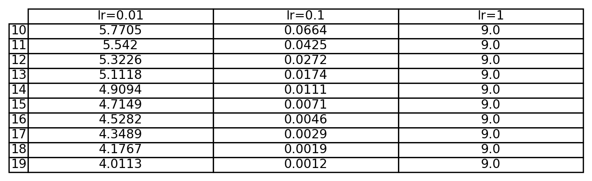

\(\nabla L(\theta)\) = gradient (vector of partial derivatives)
Idea:
Move \(\theta\) a little bit in the direction where \(L(\theta)\) decreases the fastest!
Gradient Descent: Learning Rate and Convergence
The learning rate\(\eta\) is crucial:
\(\eta\)
Behavior
Small
Very slow convergence
Moderate
Stable convergence
Large
Oscillations or divergence
Good practice: start with a moderate \(\eta\), adjust if necessary.
Learning rate schedules (decay over time) often improve results.
Python: Simple GD (Multiple Learning Rates)
Demo: \(f(x) = (x-3)^2\)
Code
import matplotlib.pyplot as pltimport pandas as pddef f(x): return (x-3)**2.##loss functiondef grad_f(x): return2*(x-3) ## derivative of loss flrs = [0.01, 0.1, 1]colors = ['blue', 'green', 'red']loss_records = {}plt.figure(figsize=(8,5))for lr, color inzip(lrs, colors): x =0.0 losses = []for i inrange(20): x -= lr * grad_f(x) losses.append(f(x)) loss_records[f"lr={lr}"] = losses plt.plot(range(20), losses, label=f"lr={lr}", color=color)plt.xlabel("Epoch")plt.ylabel("Loss")plt.title("Gradient Descent Loss Paths")plt.legend()plt.grid(True)plt.show()### Create a DataFrame for last 10 epochsdf = pd.DataFrame({k: v[-10:] for k,v in loss_records.items()}, index=range(10,20))
Code
import matplotlib.pyplot as pltimport pandas as pdfig, ax = plt.subplots(figsize=(8,2))ax.axis('off')table_data = df.round(4)ax.table(cellText=table_data.values, rowLabels=table_data.index, colLabels=table_data.columns, cellLoc='center', loc='center')plt.show()

Variants of Gradient Descent
Variant
Description
Pros
Cons
Batch Gradient Descent
Compute gradient using the entire dataset at every step
Very stable and accurate updates
Very slow for large datasets, high memory usage
Stochastic Gradient Descent (SGD)
Compute gradient using one random data point at each step
Very fast updates, can escape shallow minima
Noisy path, difficult to converge smoothly
Mini-batch Gradient Descent
Compute gradient using a small random subset
Balance between speed and stability, works well with hardware accelerators (GPUs)
Requires tuning the mini-batch size
Advanced Optimizers
Gradient descent works, but it can be slow and unstable, especially for deep networks. Modern optimizers enhance gradient descent in smart ways.
Optimizer
Core Idea
Momentum
Accumulate past gradients to build speed in useful directions and smooth noisy updates
RMSProp
Adapt the learning rate individually for each parameter based on recent gradient magnitudes
It helps accelerate the optimization process, especially in regions where the gradients oscillate or are noisy, and can help the algorithm overcome local minima.
Update rule:
\[v_t = \beta v_{t-1} + (1-\beta)\nabla L(\theta)\]\[\theta \leftarrow \theta - \eta v_t\]\(\beta\): Momentum parameter (tipically set to 0.9)
Intuition: Think of a ball rolling down a hill; it picks up speed and smooths out noise.
Intuition: Slow down updates for parameters that have consistently large gradients, speeding up directions where gradients are small (adaptative)
Adam (Adaptive Moment Estimation)
Update rule: Maintain both a moving average of the gradient (momentum) and squared gradient (adaptive scaling).
\[m_t = \beta_1 m_{t-1} + (1-\beta_1)\nabla L(\theta)\]\[v_t = \beta_2 v_{t-1} + (1-\beta_2)(\nabla L(\theta))^2\]\[\theta \leftarrow \theta - \eta \frac{m_t}{\sqrt{v_t}+\epsilon}\]\(\beta_1\), \(\beta_2\) Decay rates for the moving averages of the gradient and squared gradient.
Intuition: Combines the benefits of smoothing updates and adapting step sizes for faster, more reliable convergence.
MNIST Data Set
Hands-on: MNIST Classification with Different Optimizers
We compare SGD, Momentum, and Adam using the MNIST handwritten digits dataset!
Code
import tensorflow as tfimport matplotlib.pyplot as plt#####Load MNIST dataset(X_train, y_train), (X_test, y_test) = tf.keras.datasets.mnist.load_data()indices = [5, 6, 7] ### indices of digits to plotfig, axes = plt.subplots(1, 3, figsize=(10,4))for ax, idx inzip(axes, indices): ax.imshow(X_train[idx], cmap=plt.cm.binary)#ax.axis('off')plt.suptitle("Examples of MNIST Digits")plt.show()print(y_train[indices])X_train = X_train.reshape(-1, 28*28).astype('float32') /255.0# flattens each 28×28 image into a 784 vector X_test = X_test.reshape(-1, 28*28).astype('float32') /255.0optimizers = {"SGD": tf.keras.optimizers.SGD(learning_rate=0.01),"Momentum": tf.keras.optimizers.SGD(learning_rate=0.01, momentum=0.9),"Adam": tf.keras.optimizers.Adam(learning_rate=0.001)}histories = {}for name, optimizer in optimizers.items(): model = tf.keras.Sequential([ tf.keras.Input(shape=(784,)), tf.keras.layers.Dense(128, activation='relu'), tf.keras.layers.Dense(10, activation='softmax') ]) model.compile(optimizer=optimizer, loss='sparse_categorical_crossentropy', ## Integers (e.g., 0–9) metrics=['accuracy']) history = model.fit(X_train, y_train, validation_data=(X_test, y_test), epochs=20, batch_size=128, verbose=0) histories[name] = history
[2 1 3]
Compare Training Loss Over Epochs
Code
plt.figure(figsize=(8,6))for name, history in histories.items(): plt.plot(history.history['loss'], label=name)plt.xlabel("Epoch")plt.ylabel("Training Loss")plt.title("Training Loss Comparison (SGD vs Momentum vs Adam)")plt.legend()plt.grid(True)plt.show()
Hands-on: MNIST with Adam (Python)
Code
import torchimport torch.nn as nnimport torch.optim as optimfrom torchvision import datasets, transformstrain_loader = torch.utils.data.DataLoader( datasets.MNIST('.', train=True, download=True, transform=transforms.ToTensor()), batch_size=64, shuffle=True)model = nn.Sequential(nn.Flatten(), nn.Linear(784, 10))# model = nn.Sequential(# nn.Flatten(),# nn.Linear(784, 128),# nn.ReLU(),# nn.Linear(128, 10),# nn.Softmax(dim=1)# )criterion = nn.CrossEntropyLoss()optimizer = optim.Adam(model.parameters(), lr=0.001)train_losses = []for epoch inrange(10): running_loss =0.0for data, target in train_loader: optimizer.zero_grad() output = model(data) loss = criterion(output, target) loss.backward() optimizer.step() running_loss += loss.item() avg_loss = running_loss /len(train_loader) train_losses.append(avg_loss)print(f"Epoch {epoch}: Loss={avg_loss:.4f}")# Plot the training lossplt.figure(figsize=(8,5))plt.plot(range(1, 11), train_losses, marker='o')plt.xlabel('Epoch')plt.ylabel('Training Loss')plt.title('Training Loss Over Epochs (PyTorch Model)')plt.grid(True)plt.show()